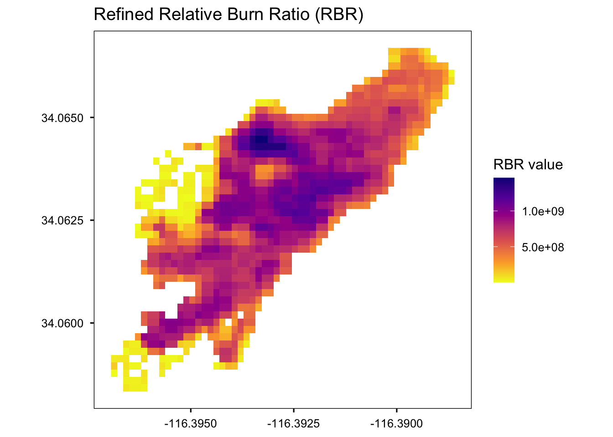
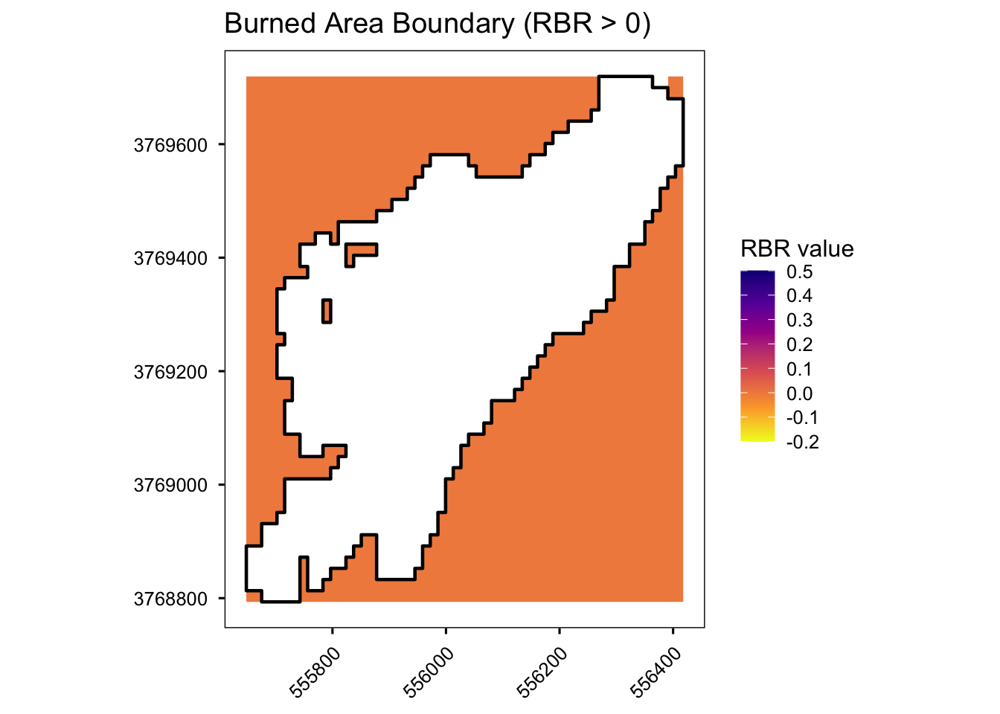
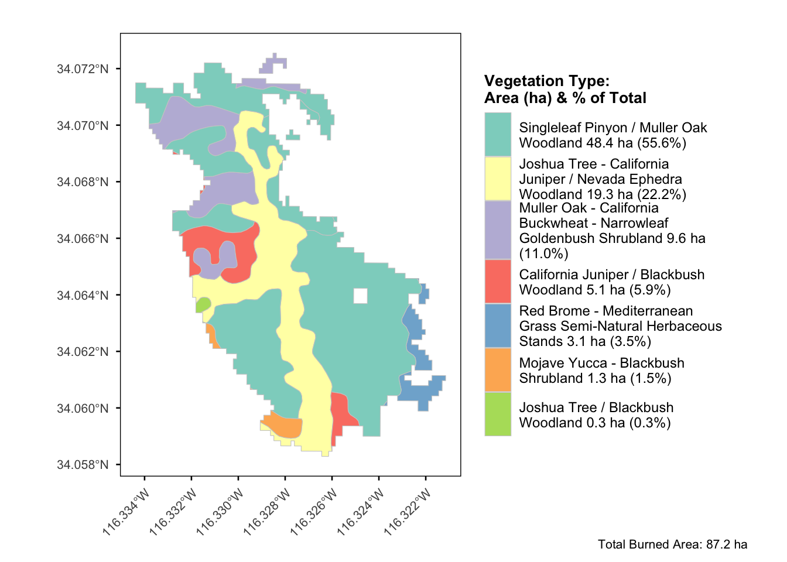
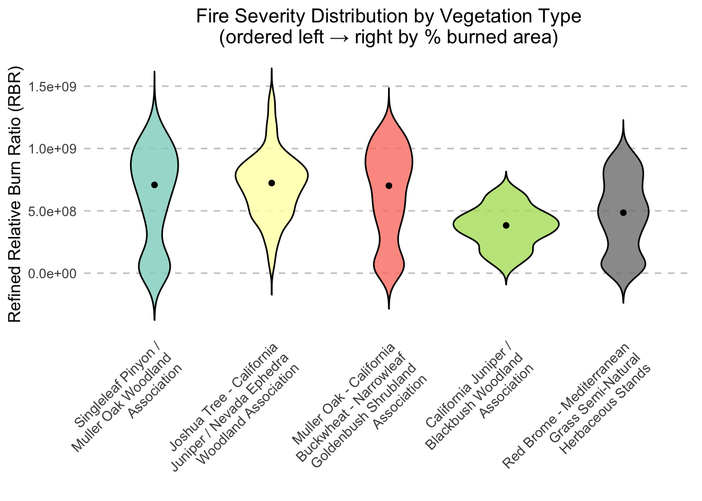
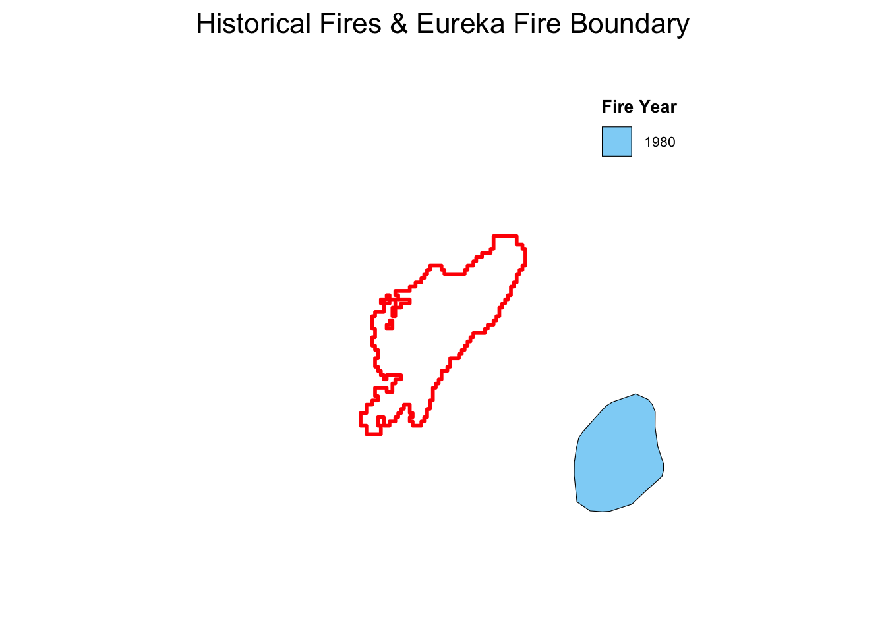
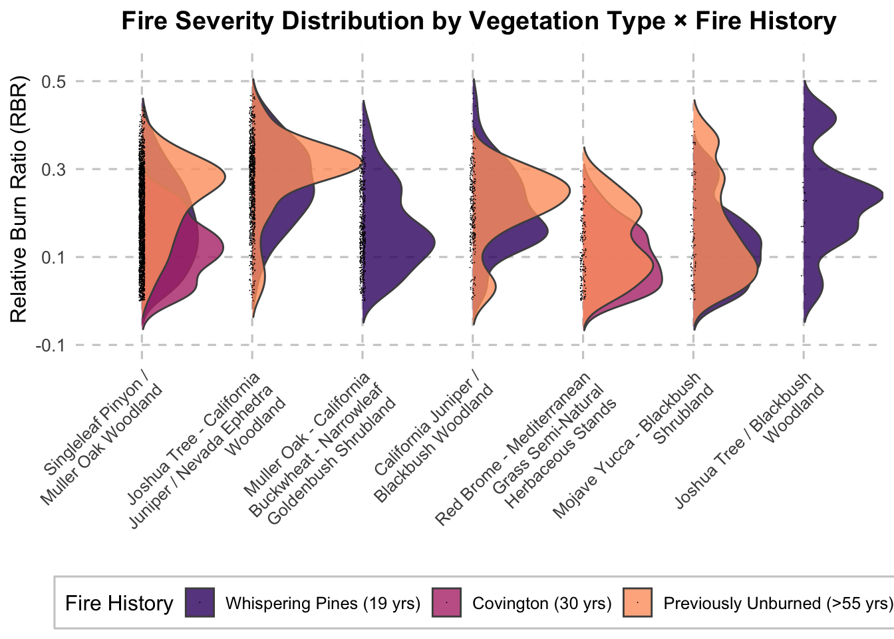

library(tidyverse)
library(sf)
library(raster)
library(exactextractr)
library(leaflet)
library(htmlwidgets)
library(viridis)
library(readr)
library(scales)
library(ggridges)
library(RColorBrewer)Black Rock Fire Exploration
Setup
Load required libraries
Read data
veg_data <- st_read(dsn = "inputs/jotrgeodata.gpkg",layer = "JOTR_VegPolys",
quiet = TRUE)
# Read fire severity (raster)
rbr_rast <- raster("inputs/black-rock-severity-rbr-georef.tif") Interactive map of fire location
# Build two palette functions (to force descending order in leaflet legend) :
pal <- colorNumeric("plasma", domain = values(rbr_rast),
na.color = "transparent")
pal_rev <- colorNumeric("plasma", domain = values(rbr_rast),
na.color = "transparent", reverse = TRUE)
# Draw the map
leaflet(options = leafletOptions(attributionControl = TRUE)) %>%
addProviderTiles("CartoDB.Positron") %>% # Use the reversed palette for the raster itself
addRasterImage(rbr_rast, colors = pal_rev, opacity = 0.6,project = FALSE) %>% # Use the normal palette + label transform for the legend
addLegend(position= "bottomright", pal = pal, values = values(rbr_rast),
title = "RBR value",
labFormat = labelFormat(transform = function(x) sort(x, decreasing = TRUE)))Static RBR map with grid
# Turn the RasterLayer into a data.frame
rbr_df <- as.data.frame(rasterToPoints(rbr_rast))
colnames(rbr_df) <- c("x", "y", "RBR")
ggplot(rbr_df, aes(x = x, y = y, fill = RBR)) +
geom_raster() +
scale_fill_viridis_c(option = "plasma", direction = -1, na.value = "transparent",
name = "RBR value", limits = c(-0.2, 0.5), breaks = seq(-0.2, 0.5, by = 0.1)) +
coord_equal() +
labs(title = "Refined Relative Burn Ratio (RBR)", x = NULL, y = NULL) +
theme_minimal(base_size = 12) +
theme(panel.grid.major = element_blank(),
panel.grid.minor = element_blank(),
panel.border = element_rect(fill = NA, color = "black", size = 0.5),
axis.ticks = element_line(color = "black"),
axis.text = element_text(color = "black"),
panel.background = element_blank(),
legend.position = "right")
Reproject raster to match vegetation data and calculate area
For the purpose of this analysis, we reprojected the fire severity raster into NAD83 / UTM zone 11N to match the vegetation map, which may introduce some imprecision of sentinel 2 cells
# Grab the vector’s CRS as a PROJ4/WKT string
vec_crs <- st_crs(veg_data)$proj4string
# Reproject the raster to that CRS
# - use method="bilinear" for continuous data
rbr_to_vec_crs <- projectRaster(rbr_rast, crs = vec_crs, method = "bilinear")Extract fire perimeter from raster
# Polygonize all positive, non‐NA cells from the reprojected raster, convert to sf und merge into a single boundary polygon
fire_boundary <- rasterToPolygons(rbr_to_vec_crs, fun = function(x) !is.na(x) & x > 0,
dissolve = TRUE) %>%
st_as_sf() %>%
st_union()
# Write to file
if (file.exists("outputs/fire_perimeter/severity_to_fire_perimeter.shp")) {
file.remove("outputs/fire_perimeter/severity_to_fire_perimeter.shp")
}[1] TRUEst_write(fire_boundary, "outputs/fire_perimeter/severity_to_fire_perimeter.shp")Writing layer `severity_to_fire_perimeter' to data source
`outputs/fire_perimeter/severity_to_fire_perimeter.shp' using driver `ESRI Shapefile'
Writing 1 features with 0 fields and geometry type Polygon.#convert reprojected raster to dataframe
rbr_to_vec_crs_df <- as.data.frame(rasterToPoints(rbr_to_vec_crs))
colnames(rbr_to_vec_crs_df) <- c("x", "y", "RBR")
#plot fire severity with generated fire boundary
ggplot() +
geom_raster(data = rbr_to_vec_crs_df, aes(x = x, y = y, fill = RBR)) +
geom_sf(data = fire_boundary, fill = NA, color = "black", linewidth = 0.8) +
scale_fill_viridis_c(option = "plasma", direction = -1, na.value = "transparent",
name = "RBR value", limits = c(-0.2, 0.5), breaks = seq(-0.2, 0.5, by = 0.1)) +
coord_sf() +
labs(title = "Burned Area Boundary (RBR > 0)", x = NULL, y = NULL) +
theme_minimal(base_size = 12) +
theme(panel.grid.major = element_blank(),
panel.grid.minor = element_blank(),
panel.border = element_rect(fill = NA, color = "black", size = 0.5),
axis.ticks = element_line(color = "black"),
axis.text = element_text(color = "black"),
axis.text.x = element_text(angle = 45, hjust = 1),
panel.background = element_blank(),
legend.position = "right")
Clip vegetation data to fire boundary and ummarize vegetation types within fire boundary
# Ensure CRS metadata match before intersection (sf requires exact equality)
if (!identical(st_crs(veg_data), st_crs(fire_boundary))) {
st_crs(fire_boundary) <- st_crs(veg_data)
}
# Calculate area per vegetation type polygon
clipped_veg <- st_intersection(veg_data, fire_boundary) %>%
mutate(area_ha = as.numeric(st_area(.) / 10000)) # m² → ha
# Summarize hectares by vegetation type
veg_summary <- clipped_veg %>%
st_set_geometry(NULL) %>% # drop geometry for speed
group_by(MapUnit_Name) %>%
summarise(veg_ha = sum(area_ha, na.rm = TRUE), .groups = "drop") %>%
mutate(pct_of_total = 100 * veg_ha / sum(veg_ha)) %>%# total area can be calculated in pipe
bind_rows(tibble(MapUnit_Name = "Total Burned Area",
veg_ha = sum(clipped_veg$area_ha), pct_of_total = 100)) %>%
arrange(desc(pct_of_total))
# write out
write_csv(veg_summary, "outputs/veg_burned_summary.csv")
# show table
knitr::kable(veg_summary)| MapUnit_Name | veg_ha | pct_of_total |
|---|---|---|
| Total Burned Area | 32.7650400 | 100.000000 |
| California Juniper / Blackbush Woodland Association | 11.5445454 | 35.234339 |
| Joshua Tree - California Juniper / Nevada Ephedra Woodland Association | 9.2585279 | 28.257337 |
| California Juniper / Muller Oak - Blackbush Woodland Association | 5.4866104 | 16.745319 |
| Singleleaf Pinyon / Muller Oak Woodland Association | 3.2313060 | 9.862054 |
| Catclaw Acacia - Desert Almond Shrubland Association | 1.4747313 | 4.500929 |
| Joshua Tree / Blackbush Woodland Association | 0.9781393 | 2.985314 |
| Catclaw Acacia - (Sweetbush - Desert Lavender) Shrubland Association | 0.7911799 | 2.414708 |
Assertions
# After creating fire_boundary
fire_boundary_area <- st_area(fire_boundary) %>% units::set_units("ha")
cat("Total fire boundary area (ha):", fire_boundary_area, "\n")Total fire boundary area (ha): 32.76504 # After clipping vegetation
total_veg_area <- sum(clipped_veg$area_ha)
cat("Sum of vegetation areas within fire (ha):", total_veg_area, "\n")Sum of vegetation areas within fire (ha): 32.76504 # Assert that these are approximately equal (within small tolerance for computational differences)
stopifnot(abs(as.numeric(fire_boundary_area) - total_veg_area) < 0.1)Map vegetation types and their area within fire boundary
# Join summary back to clipped polygons
clipped_joined <- clipped_veg %>%
dplyr::left_join(dplyr::select(veg_summary, MapUnit_Name, veg_ha, pct_of_total),
by = "MapUnit_Name")
# Create an ordered factor of vegetation types
ordered_types <- veg_summary %>%
filter(MapUnit_Name != "Total Burned Area") %>%
arrange(desc(pct_of_total)) %>%
pull(MapUnit_Name)
# Pick colors from the Set3 palette
n_types <- length(ordered_types)
set3_cols <- brewer.pal(n = max(3, n_types), "Set3")[1:n_types]
names(set3_cols) <- ordered_types
# Build legend labels without the word “Association”
legend_labels <- veg_summary %>%
filter(MapUnit_Name != "Total Burned Area") %>%
mutate(clean_name = MapUnit_Name %>% # remove “Association” and clean up whitespace
str_remove_all("Association") %>%
str_squish(),
label = sprintf("%s\n%.1f ha (%.1f%%)",
clean_name,
veg_ha,
pct_of_total)) %>%
pull(label) %>%
set_names(ordered_types) # keep the same factor levels for mapping
# Total burned area for caption
total_fire_ha <- veg_summary %>%
filter(MapUnit_Name == "Total Burned Area") %>%
pull(veg_ha)
# wrap your legend labels to ~30 chars per line
legend_labels_wrapped <- legend_labels %>%
lapply(str_wrap, width = 30) %>%
unlist(use.names = TRUE)
#plot
ggplot(clipped_joined) +
geom_sf(aes(fill = factor(MapUnit_Name, levels = ordered_types)),
color = "gray80", size = 0.2) +
scale_fill_manual(values = set3_cols, labels = legend_labels_wrapped,
name = "Vegetation Type:\nArea (ha) & % of Total") +
coord_sf(crs = st_crs(4326)) + # keep geographic graticule if you like
labs(title = "", caption = sprintf("Total Burned Area: %.1f ha", total_fire_ha)) +
theme_minimal(base_size = 10) +
theme(panel.grid.major = element_blank(),
panel.grid.minor = element_blank(),
panel.border = element_rect(fill = NA, color = "black", size = 0.5),
panel.background = element_blank(),
axis.text.x = element_text(angle = 45, hjust = 1), # ← slanted labels
axis.text.y = element_text(size = 8),
axis.ticks = element_line(color = "black"),
axis.title = element_blank(),
legend.position = "right",
legend.text = element_text(size = 9),
legend.title = element_text(size = 10, face = "bold"),
legend.key.height = unit(1, "cm"), # ↑ match the guide keyheight
legend.spacing.y = unit(1, "cm"),
plot.caption = element_text(hjust = 2.5, margin = margin(b = 2)))
Summary statistics of fire severity by vegetation type
merged_units_veg <- clipped_veg %>%
dplyr::select(MapUnit_Name, SHAPE) %>%
group_by(MapUnit_Name) %>%
summarise(do_union = TRUE, .groups = "drop")
# Compute per-polygon stats
clipped_stats <- merged_units_veg %>%
mutate(min_RBR = exact_extract(rbr_to_vec_crs, ., "min",progress = FALSE),
max_RBR = exact_extract(rbr_to_vec_crs, ., "max",progress = FALSE),
mean_RBR = exact_extract(rbr_to_vec_crs, ., "mean",progress = FALSE),
median_RBR = exact_extract(rbr_to_vec_crs, ., "median",progress = FALSE),
sd_RBR = exact_extract(rbr_to_vec_crs, ., "stdev",progress = FALSE),
n_pixels = exact_extract(rbr_to_vec_crs, ., "count",progress = FALSE))
# Reorder to your preferred sequence
ordered_veg <- c("Singleleaf Pinyon / Muller Oak Woodland Association",
"Joshua Tree - California Juniper / Nevada Ephedra Woodland Association",
"Muller Oak - California Buckwheat - Narrowleaf Goldenbush Shrubland Association",
"California Juniper / Blackbush Woodland Association",
"Red Brome - Mediterranean Grass Semi-Natural Herbaceous Stands",
"Mojave Yucca - Blackbush Shrubland Association",
"Joshua Tree / Blackbush Woodland Association")
severity_summary <- clipped_stats %>%
slice(match(ordered_veg, MapUnit_Name)) %>%
st_set_geometry(NULL)
#Write
write_csv(severity_summary, "outputs/severity_veg_summary.csv")
# View results
knitr::kable(
severity_summary)| MapUnit_Name | min_RBR | max_RBR | mean_RBR | median_RBR | sd_RBR | n_pixels |
|---|---|---|---|---|---|---|
| Singleleaf Pinyon / Muller Oak Woodland Association | 0.0 | 1227024059 | 562679232 | 664263258 | 388288320 | 121.50051 |
| Joshua Tree - California Juniper / Nevada Ephedra Woodland Association | -618429.3 | 1440397289 | 694124800 | 718841171 | 270976896 | 348.13040 |
| California Juniper / Blackbush Woodland Association | 0.0 | 1194551736 | 607052032 | 697326753 | 377328960 | 434.08707 |
| Joshua Tree / Blackbush Woodland Association | 0.0 | 741030643 | 156567168 | 35380933 | 218441296 | 36.77906 |
Plot fire severity by vegetation type
# Extract pixel values per polygon directly
vals_list <- extract(rbr_to_vec_crs, merged_units_veg)
# Build long tibble
vals_df <- tibble(MapUnit_Name = merged_units_veg$MapUnit_Name, value = vals_list) %>%
unnest(cols = c(value)) %>%
filter(!is.na(value)) %>%
mutate(MapUnit_Name = factor(MapUnit_Name, levels = ordered_veg))
# Prepare colors & wrapped labels
set3_cols <- brewer.pal(length(ordered_veg), "Set3")
names(set3_cols) <- ordered_veg
labels_wrapped <- str_wrap(ordered_veg, width = 25)
# Plot
ggplot(vals_df, aes(x = MapUnit_Name, y = value, fill = MapUnit_Name)) +
geom_violin(trim = FALSE, color = "black", alpha = 0.8) +
stat_summary(fun = median, geom = "point", size = 1.5, color = "black") +
scale_fill_manual(values = set3_cols, guide = FALSE) +
scale_x_discrete(labels = labels_wrapped) +
labs(x = NULL,
y = "Refined Relative Burn Ratio (RBR)",
title = "Fire Severity Distribution by Vegetation Type\n(ordered left → right by % burned area)") +
theme_minimal(base_size = 12) +
theme(axis.text.x = element_text(angle = 45, hjust = 1, size = 10),
panel.grid.major.y = element_line(color = "grey80", linetype = "dashed"),
panel.grid.major.x = element_blank(),
panel.grid.minor = element_blank(),
plot.title = element_text(hjust = 0.5, size = 14))
Load Historical Fires
# Read the historic‐fires shapefile
fire_hist <- st_read("inputs/HistFires_JOTR_MOJA/FindExistingLocationsOutput.shp") %>% # Reproject into EPSG:26911 (NAD83 / UTM zone 11N)
st_transform(26911)Map historical fires and Eureka fire boundary
# palette for all years —
fire_years <- sort(unique(fire_hist$YEAR_))
pal_fire <- setNames(viridis(n = length(fire_years), option = "turbo"), fire_years)
# create a 100% buffer around the Eureka fire polygon
# (buffer distance = max(width, height) of its bbox)
fb <- fire_boundary %>%
st_union() %>% # ensure single geometry
{
bb <- st_bbox(.)
dist <- max(bb$xmax - bb$xmin, bb$ymax - bb$ymin)
st_buffer(., dist)
}
# find which historic fires intersect that buffer
visible_yr <- fire_hist %>%
filter(st_intersects(., fb, sparse = FALSE)) %>%
pull(YEAR_) %>%
unique() %>%
sort()
# plot
ggplot() +
geom_sf(data = fire_hist, aes(fill = factor(YEAR_)), colour = "black",
size = 0.2, alpha = 0.6) +
geom_sf(data = fire_boundary, fill = NA, colour = "red", size = 1) +
coord_sf(xlim = st_bbox(fb)[c("xmin", "xmax")], ylim = st_bbox(fb)[c("ymin", "ymax")],
expand = FALSE) +
scale_fill_manual(name = "Fire Year", values = pal_fire, breaks = visible_yr) +
labs(title = "Historical Fires & Eureka Fire Boundary") +
theme_void(base_size = 14) +
theme(legend.position = c(0.85, 0.85),
legend.background = element_rect(fill = "white", color = "grey80"),
legend.title = element_text(face = "bold", size = 10),
legend.text = element_text(size = 8),
plot.title = element_text(hjust = 0.5, size = 16))
Summary statistics of fire severity by historical fire
# Intersection of historic fires & Eureka boundary
burned_overlap <- st_intersection(fire_hist, fire_boundary)
# Burned stats by YEAR_ + FIRE_NAME (still sf)
burned_stats <- burned_overlap %>%
mutate(min_RBR = exact_extract(rbr_to_vec_crs, ., "min",progress = FALSE),
max_RBR = exact_extract(rbr_to_vec_crs, ., "max",progress = FALSE),
mean_RBR = exact_extract(rbr_to_vec_crs, ., "mean",progress = FALSE),
sd_RBR = exact_extract(rbr_to_vec_crs, ., "stdev",progress = FALSE),
area_ha = st_area(geometry)/10000) %>%
dplyr::select(FIRE_NAME, YEAR_, min_RBR, max_RBR, mean_RBR, sd_RBR, area_ha)
# Unburned remainder stats (also an sf)
unburned_stats <- st_sf(FIRE_NAME = "Previously Unburned", YEAR_ = 0,
geometry = st_sfc(st_difference(st_union(fire_boundary), st_union(burned_overlap))),
crs = st_crs(fire_boundary)) %>%
mutate(min_RBR = exact_extract(rbr_to_vec_crs, ., "min",progress = FALSE),
max_RBR = exact_extract(rbr_to_vec_crs, ., "max",progress = FALSE),
mean_RBR = exact_extract(rbr_to_vec_crs, ., "mean",progress = FALSE),
sd_RBR = exact_extract(rbr_to_vec_crs, ., "stdev",progress = FALSE),
area_ha = st_area(geometry)/10000) %>%
dplyr::select(FIRE_NAME, YEAR_, min_RBR, max_RBR, mean_RBR, sd_RBR, area_ha)
# Combine
full_fire_history <- bind_rows(burned_stats, unburned_stats)
# Plot:
# plot(full_fire_history["FIRE_NAME"])
# Drop geometry and fix the NA‐row
full_fire_history_table <- full_fire_history %>%
st_set_geometry(NULL) %>%
mutate(YEAR_ = if_else(is.na(YEAR_), 0L, YEAR_),
FIRE_NAME = if_else(is.na(FIRE_NAME), "Unburned", FIRE_NAME))
#Write
write_csv(full_fire_history_table, "outputs/severity_fire_history.csv")
# Display
knitr::kable(
full_fire_history_table)| FIRE_NAME | YEAR_ | min_RBR | max_RBR | mean_RBR | sd_RBR | area_ha |
|---|---|---|---|---|---|---|
| Previously Unburned | 0 | -618429.3 | 1440397289 | 554613376 | 362224992 | 32.76504 [m^2] |
Assertions
burned_area_sum <- sum(as.numeric(st_area(burned_overlap))) / 10000
unburned_area <- as.numeric(st_area(unburned_stats)) / 10000
total_calculated_area <- burned_area_sum + unburned_area
cat("Sum of historical burned areas (ha):", burned_area_sum, "\n")Sum of historical burned areas (ha): 0 cat("Unburned area (ha):", unburned_area, "\n")Unburned area (ha): 32.76504 cat("Total calculated area (ha):", total_calculated_area, "\n")Total calculated area (ha): 32.76504 cat("Total fire boundary area (ha):", as.numeric(fire_boundary_area), "\n")Total fire boundary area (ha): 32.76504 # Check these are approximately equal
stopifnot(abs(total_calculated_area - as.numeric(fire_boundary_area)) < 0.1)Summary statistics fire severity by vegetation type & fire history
# overlay veg × fire
veg_hist <- st_intersection(
merged_units_veg["MapUnit_Name"],
burned_overlap[c("FIRE_NAME","YEAR_")]
)
# compute per‐polygon RBR stats (still sf)
veg_hist_stats <- veg_hist %>%
mutate(min_RBR = exact_extract(rbr_to_vec_crs, ., "min",progress = FALSE),
max_RBR = exact_extract(rbr_to_vec_crs, ., "max",progress = FALSE),
mean_RBR = exact_extract(rbr_to_vec_crs, ., "mean",progress = FALSE),
sd_RBR = exact_extract(rbr_to_vec_crs, ., "stdev",progress = FALSE),
area_ha = as.numeric(st_area(.)) / 10000)
# build the “previously unburned” pieces
burned_union <- st_union(burned_overlap)
# make geometries valid and perform difference on sfc, then rebuild sf to avoid tibble size issues
mu_valid <- st_make_valid(merged_units_veg)
burned_union_valid <- st_make_valid(burned_union)
geom_diff <- st_difference(st_geometry(mu_valid), burned_union_valid)
veg_unburned <- st_sf(st_drop_geometry(mu_valid), geometry = geom_diff, crs = st_crs(mu_valid)) %>%
filter(!st_is_empty(geometry))
# compute stats on unburned (still sf)
veg_unburned_stats <- veg_unburned %>%
mutate(min_RBR = exact_extract(rbr_to_vec_crs, ., "min",progress = FALSE),
max_RBR = exact_extract(rbr_to_vec_crs, ., "max",progress = FALSE),
mean_RBR = exact_extract(rbr_to_vec_crs, ., "mean",progress = FALSE),
sd_RBR = exact_extract(rbr_to_vec_crs, ., "stdev",progress = FALSE),
area_ha = as.numeric(st_area(.)) / 10000,
FIRE_NAME = "Previously Unburned",YEAR_ = 0L)
# bind burned + unburned
full_veg_history <- rbind(veg_hist_stats, veg_unburned_stats) %>%
mutate(MapUnit_Name = factor(MapUnit_Name, levels = ordered_veg, ordered = TRUE),
FIRE_NAME = factor(FIRE_NAME, levels = c("WHISPERING PINES","COVINGTON","Previously Unburned"), ordered = TRUE)) %>%
arrange(MapUnit_Name, FIRE_NAME)%>%
st_set_geometry(NULL)
#Write
write_csv(full_veg_history, "outputs/severity_veg_firehist.csv")
#show
knitr::kable(
full_veg_history)| MapUnit_Name | min_RBR | max_RBR | mean_RBR | sd_RBR | area_ha | FIRE_NAME | YEAR_ |
|---|---|---|---|---|---|---|---|
| Singleleaf Pinyon / Muller Oak Woodland Association | 0.0 | 1227024059 | 562679232 | 388288320 | 3.2313060 | Previously Unburned | 0 |
| Joshua Tree - California Juniper / Nevada Ephedra Woodland Association | -618429.3 | 1440397289 | 694124800 | 270976896 | 9.2585279 | Previously Unburned | 0 |
| California Juniper / Blackbush Woodland Association | 0.0 | 1194551736 | 607052032 | 377328960 | 11.5445454 | Previously Unburned | 0 |
| Joshua Tree / Blackbush Woodland Association | 0.0 | 741030643 | 156567168 | 218441296 | 0.9781393 | Previously Unburned | 0 |
| NA | 0.0 | 971191245 | 380661248 | 330692576 | 5.4866104 | Previously Unburned | 0 |
| NA | 4784856.7 | 820388867 | 266628640 | 229805648 | 0.7911799 | Previously Unburned | 0 |
| NA | 0.0 | 916436232 | 316253920 | 282010912 | 1.4747313 | Previously Unburned | 0 |
Assertions
# After calculating veg_hist_stats and veg_unburned_stats
veg_hist_area_sum <- sum(veg_hist_stats$area_ha)
veg_unburned_area_sum <- sum(veg_unburned_stats$area_ha)
total_veg_hist_area <- veg_hist_area_sum + veg_unburned_area_sum
cat("Vegetation × burned area (ha):", veg_hist_area_sum, "\n")Vegetation × burned area (ha): 0 cat("Vegetation × unburned area (ha):", veg_unburned_area_sum, "\n")Vegetation × unburned area (ha): 32.76504 cat("Total calculated area (ha):", total_veg_hist_area, "\n")Total calculated area (ha): 32.76504 cat("Total fire boundary area (ha):", as.numeric(fire_boundary_area), "\n")Total fire boundary area (ha): 32.76504 stopifnot(abs(total_veg_hist_area - as.numeric(fire_boundary_area)) < 0.1)Extract RBR pixel values by vegetation type & fire history
# burned pixels
burned_vals <- exact_extract(
rbr_to_vec_crs,
veg_hist %>% dplyr::select(MapUnit_Name, FIRE_NAME),
include_cols = c("MapUnit_Name","FIRE_NAME"),
progress = FALSE
)
# bind safely even if there are zero features
burned_vals <- if (length(burned_vals) == 0) {
tibble(MapUnit_Name = character(), FIRE_NAME = character(),
value = numeric(), coverage_fraction = numeric())
} else {
dplyr::bind_rows(burned_vals)
}
burned_vals <- burned_vals %>% dplyr::filter(!is.na(value))
# unburned pixels
unburn_vals <- exact_extract(
rbr_to_vec_crs,
veg_unburned %>% dplyr::select(MapUnit_Name),
include_cols = "MapUnit_Name",
progress = FALSE
)
unburn_vals <- if (length(unburn_vals) == 0) {
tibble(MapUnit_Name = character(),
value = numeric(), coverage_fraction = numeric())
} else {
dplyr::bind_rows(unburn_vals)
}
unburn_vals <- unburn_vals %>%
dplyr::filter(!is.na(value)) %>%
dplyr::mutate(FIRE_NAME = "Previously Unburned")
# combine & factor
all_vals <- bind_rows(burned_vals, unburn_vals) %>%
mutate(MapUnit_Name = factor(MapUnit_Name, levels = ordered_veg, ordered = TRUE),
FIRE_NAME = factor(
FIRE_NAME,
levels = c("WHISPERING PINES","COVINGTON","Previously Unburned"),
ordered = TRUE))Assertions
# Combine both burned and unburned pixel datasets
all_pixels <- bind_rows(
burned_vals %>%
dplyr::select(MapUnit_Name, FIRE_NAME, value, coverage_fraction),
unburn_vals %>%
dplyr::select(MapUnit_Name, FIRE_NAME, value, coverage_fraction)
)
# Look at coverage fraction distribution
coverage_summary <- summary(all_pixels$coverage_fraction)
cat("Coverage fraction summary:\n")Coverage fraction summary:print(coverage_summary) Min. 1st Qu. Median Mean 3rd Qu. Max.
0.0000 0.3896 0.9872 0.7064 1.0000 1.0000 # Calculate total effective pixels based on coverage fractions
total_effective_pixels <- sum(all_pixels$coverage_fraction)
# Get the pixel count directly from the fire boundary for comparison
# Convert fire_boundary to an sf object first
fire_boundary_sf <- st_as_sf(st_sfc(fire_boundary, crs = st_crs(fire_boundary)))
fire_boundary_pixels <- exact_extract(rbr_to_vec_crs, fire_boundary_sf)[[1]]
total_boundary_pixels <- nrow(fire_boundary_pixels)
# Calculate the sum of coverage fractions from the fire boundary extraction
total_boundary_coverage <- sum(fire_boundary_pixels$coverage_fraction)
# Report the key metrics
cat("\nPixel Count Analysis:\n")
Pixel Count Analysis:cat("- Total pixels from direct fire boundary extraction:", total_boundary_pixels, "\n")- Total pixels from direct fire boundary extraction: 1248 cat("- Sum of coverage fractions from fire boundary:", total_boundary_coverage, "\n")- Sum of coverage fractions from fire boundary: 1232 cat("- Total effective pixels from veg × fire history extraction:", total_effective_pixels, "\n")- Total effective pixels from veg × fire history extraction: 1232 cat("- Difference in effective pixels:",
abs(total_effective_pixels - total_boundary_coverage),
"(", round(100 * abs(total_effective_pixels - total_boundary_coverage) / total_boundary_coverage, 2), "%)\n")- Difference in effective pixels: 2.114346e-07 ( 0 %)# Check if the difference is within tolerance (adjusted from 5% to 1% for stricter validation)
stopifnot(abs(total_effective_pixels - total_boundary_coverage) / total_boundary_coverage < 0.01)Plot fire severity by vegetation type x fire history
#remove 'association' from unit names
ordered_veg_clean <- ordered_veg %>%
str_remove_all("Association") %>%
str_squish()
all_vals_ordered <- all_vals %>%
mutate(MapUnit_Name = str_squish(str_remove_all(MapUnit_Name, "Association")), MapUnit_Name = factor(MapUnit_Name, levels = ordered_veg_clean, ordered = TRUE))
# build legend labels
legend_labs <- c("WHISPERING PINES" = sprintf("Whispering Pines (19 yrs)"),
"COVINGTON" = sprintf("Covington (30 yrs)"),
"Previously Unburned" = "Previously Unburned (>55 yrs)")
ggplot(all_vals_ordered, aes(x= value, y = MapUnit_Name, fill = FIRE_NAME)) +
geom_density_ridges(scale = 1.0, rel_min_height = 0.01, trim = FALSE,
colour = "grey30", alpha = 0.8, size = 0.2) +
geom_jitter(aes(x = value, y = MapUnit_Name), height = 0.025,
size = .5, stroke = 0, shape = 20) +
coord_flip() +
scale_x_continuous(name = " Relative Burn Ratio (RBR)",
breaks = seq(-0.1, 0.6, by = 0.2), limits = c(-0.1, 0.55)) +
scale_y_discrete(name = NULL, labels = function(x) str_wrap(x, 25)) +
scale_fill_viridis_d(name = "Fire History", option = "magma", begin = 0.2,
end = 0.8, labels = legend_labs) +
labs(title = "Fire Severity Distribution by Vegetation Type × Fire History") +
theme_minimal(base_size = 12) +
theme(axis.text.x = element_text(angle = 45, hjust = 1),
axis.text.y = element_text(size = 10),
panel.grid.major = element_line(color = "grey80", linetype = "dashed"),
panel.grid.minor = element_blank(),
plot.title = element_text(face = "bold", hjust = 0.5),
legend.position = "bottom",
legend.background = element_rect(fill = "white", color = "grey80"))